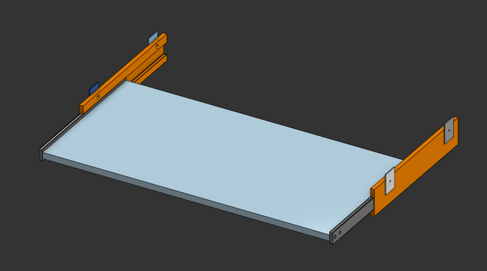
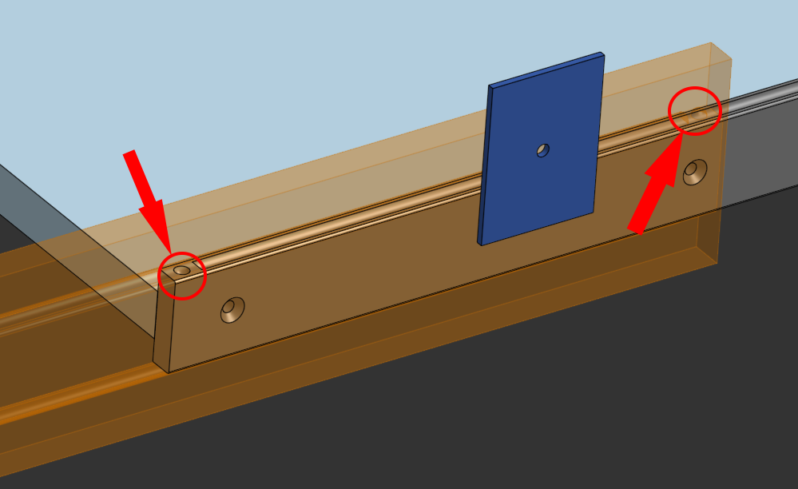
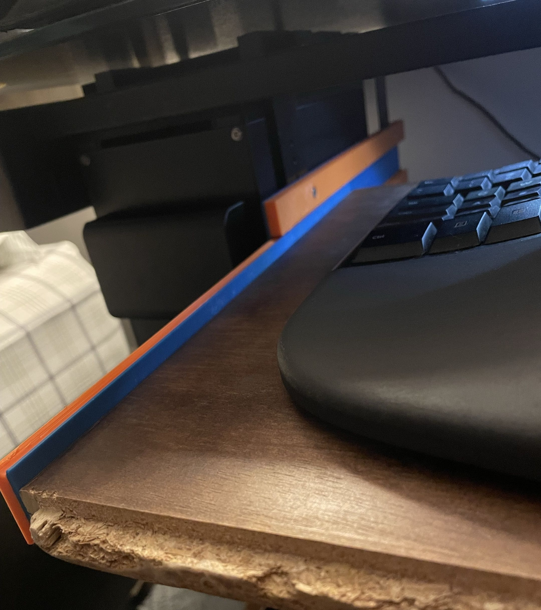

3D-Printed Structural Desk Rail
Overview
When the original metal rail on my sliding desk tray broke during the middle of my school semester, I needed to quickly design a custom 3D-printed structural replacement. The project required precise measurements of the wooden desk and existing mounting holes to ensure a perfect fit and smooth operation. The geometry was optimized for FDM manufacturing and validated using beam bending calculations to guarantee high stiffness and minimal deflection under the expected load of my keyboard, mouse, heavy typing and resting arms.
The best part of this emergency design is that the new sliding rail works much better than the old one ever did, and if it ever breaks I can print a new one and have it ready in a few hours.
Key Design Highlights
- Hardware Integration: Implemented countersunk screw holes so the fastener heads sit flush, preventing them from catching on the sliding rail and stopping the mechanism.
- Custom Linear Bearings: Utilized copper BBs inside the rail channel. These act as smooth ball bearings for easy sliding while keeping the tray locked securely in its track. Also applied WD-40 PTFE dry lube spray for even smoother operation.
- Structural Validation: Beam bending calculations were done during the design phase to ensure the plastic replacement would match or exceed the rigidity of the broken metal part.
- Manufacturing Adaptability: Originally designed as a single large print utilizing the massive build volume of a Prusa XL. Later, I adapted the CAD to be modular, splitting it into two interlocking pieces secured with fasteners so it could be printed on a standard Bambu Lab P1S if a Prusa XL was not available.
Technical Specifications
| CAD Software | Onshape |
|---|---|
| Manufacturing Method | Fused Deposition Modeling (FDM) |
| Primary Printer (Single Piece) | Prusa XL |
| Secondary Printer (Modular) | Bambu Lab P1S |
| Sliding Mechanism | Integrated Copper BBs |
| Mounting Hardware | Countersunk Screws |
Gallery

